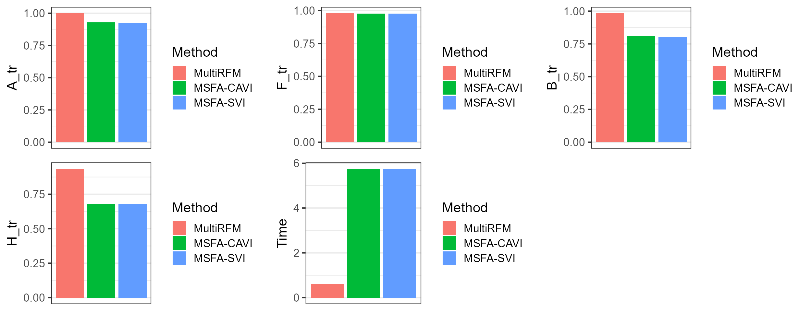

vignettes/simu_low_dim.Rmd
simu_low_dim.RmdThis vignette introduces the usage of MultiRFM for the analysis of low-dimensional multi-study multivariate data with heavy tail, by comparison with other methods.
The package can be loaded with the command, and define some metric functions:
library(MultiRFM)
#> MultiRFM : We introduce a high-dimensional multi-study robust factor model, called MultiRFM, which learns latent features and accounts for the heterogeneity among source. It could be used for analyzing heterogeneous RNA sequencing data. More details can be referred to Jiang et al. (2025) <doi:10.48550/arXiv.2506.18478>.
trace_statistic_fun <- function(H, H0){
tr_fun <- function(x) sum(diag(x))
mat1 <- t(H0) %*% H %*% qr.solve(t(H) %*% H) %*% t(H) %*% H0
tr_fun(mat1) / tr_fun(t(H0) %*% H0)
}
trace_list_fun <- function(Hlist, H0list){
trvec <- rep(NA, length(Hlist))
for(i in seq_along(trvec)){
trvec[i] <- trace_statistic_fun(Hlist[[i]], H0list[[i]])
}
return(mean(trvec))
}First, we generate the simulated data with heavy tail, where the error term follows from a multivariate t-distribution with degree of freedom 3.
nu <- 3 # nu is set to
p <- 100
nvec <- c(150,200); q <- 3;qs <- c(2,2); S <- length(nvec)
sigma2_eps <- 1
datList <- gendata_simu_multi(seed=1, nvec=nvec, p=p, q=q, qs=qs, rho=c(5,5), err.type='mvt', sigma2_eps = sigma2_eps, nu=nu)Fit the MultiRFM model using the function MultiRFM() in
the R package MultiRFM. Users can use
?MultiRFM to see the details about this function. For two
matrices
and
,
we use trace statistic to measure their similarity. The trace statistic
ranges from 0 to 1, with higher values indicating better
performance.
methodNames <- c("MultiRFM", "MSFA-CAVI", "MSFA-SVI")
metricMat <- matrix(NA, nrow=length(methodNames), ncol=5)
colnames(metricMat) <- c('A_tr', 'B_tr', 'F_tr', 'H_tr', 'Time')
row.names(metricMat) <- methodNames
XList <- datList$Xlist;
res <- MultiRFM(XList, q=q, qs=qs)
#> iter = 2, ELBO= -58129.560859, dELBO=0.999973
#> iter = 3, ELBO= -49414.109943, dELBO=0.149931
#> iter = 4, ELBO= -44128.600439, dELBO=0.106964
#> iter = 5, ELBO= -42446.048326, dELBO=0.038128
#> iter = 6, ELBO= -42135.587653, dELBO=0.007314
#> iter = 7, ELBO= -42010.848147, dELBO=0.002960
#> iter = 8, ELBO= -41925.829940, dELBO=0.002024
#> iter = 9, ELBO= -41860.757536, dELBO=0.001552
#> iter = 10, ELBO= -41808.729928, dELBO=0.001243
#> iter = 11, ELBO= -41766.027404, dELBO=0.001021
#> iter = 12, ELBO= -41730.319533, dELBO=0.000855
#> iter = 13, ELBO= -41700.030305, dELBO=0.000726
#> iter = 14, ELBO= -41674.040116, dELBO=0.000623
#> iter = 15, ELBO= -41651.524890, dELBO=0.000540
#> iter = 16, ELBO= -41631.861358, dELBO=0.000472
#> iter = 17, ELBO= -41614.567784, dELBO=0.000415
#> iter = 18, ELBO= -41599.265115, dELBO=0.000368
#> iter = 19, ELBO= -41585.650580, dELBO=0.000327
#> iter = 20, ELBO= -41573.479195, dELBO=0.000293
#> iter = 21, ELBO= -41562.550504, dELBO=0.000263
#> iter = 22, ELBO= -41552.698856, dELBO=0.000237
#> iter = 23, ELBO= -41543.786157, dELBO=0.000214
#> iter = 24, ELBO= -41535.696373, dELBO=0.000195
#> iter = 25, ELBO= -41528.331313, dELBO=0.000177
#> iter = 26, ELBO= -41521.607345, dELBO=0.000162
#> iter = 27, ELBO= -41515.452815, dELBO=0.000148
#> iter = 28, ELBO= -41509.805996, dELBO=0.000136
#> iter = 29, ELBO= -41504.613448, dELBO=0.000125
#> iter = 30, ELBO= -41499.828687, dELBO=0.000115
#str(res)
metricMat["MultiRFM",'Time'] <- res$time_use
metricMat["MultiRFM",'A_tr'] <- trace_statistic_fun(res$A, datList$A0)
metricMat["MultiRFM",'B_tr'] <- trace_list_fun(res$B, datList$Blist0)
metricMat["MultiRFM",'F_tr'] <- trace_list_fun(res$F, datList$Flist)
metricMat["MultiRFM",'H_tr'] <- trace_list_fun(res$H, datList$Hlist)We compare MultiRFM with two prominent methods: MSFA-CAVI and MSFA-SVI
First, we implement MSFA-CAVI:
X_s <- lapply(XList, scale, scale=FALSE)
hmu <- sapply(XList, colMeans)
library(VIMSFA)
### MSFA-CAVI
print("MSFA-CAVI")
#> [1] "MSFA-CAVI"
tic <- proc.time()
cavi_est <- cavi_msfa(X_s, K=q, J_s=qs)
#> [1] "Iteration: 1, Objective: 3.98240e+03, Relative improvement Inf"
#> [1] "Iteration: 1, Objective: 9.18458e+02, Relative improvement Inf"
#> [1] "Iteration: 1, Objective: 1.62926e+03, Relative improvement Inf"
#> [1] "Algorithm converged in 5 iterations."
toc <- proc.time()
time_cavi <- toc[3] - tic[3]
hLam <- Reduce(cbind, cavi_est$mean_psi_s)
hF_cavi <- hH_cavi <- list()
for(s in 1:S){
# s <- 1
hF_cavi[[s]] <- t(Reduce(cbind, cavi_est$mean_f[[s]]))
hH_cavi[[s]] <- t(Reduce(cbind, cavi_est$mean_l[[s]]))
}
metricMat["MSFA-CAVI",'Time'] <- time_cavi
metricMat["MSFA-CAVI",'A_tr'] <- trace_statistic_fun(cavi_est$mean_phi, datList$A0)
metricMat["MSFA-CAVI",'B_tr'] <- trace_list_fun(cavi_est$mean_lambda_s, datList$Blist0)
metricMat["MSFA-CAVI",'F_tr'] <- trace_list_fun(hF_cavi, datList$Flist)
metricMat["MSFA-CAVI",'H_tr'] <- trace_list_fun(hH_cavi, datList$Hlist)Next, we implement MSFA-SVI:
print("MSFA-SVI")
#> [1] "MSFA-SVI"
tic <- proc.time()
svi_est <- svi_msfa(X_s, K=q, J_s=qs, verbose = 0)
#> [1] "Iteration: 1, Objective: 3.96309e+03, Relative improvement Inf"
#> [1] "Iteration: 1, Objective: 9.16857e+02, Relative improvement Inf"
#> [1] "Iteration: 1, Objective: 1.64725e+03, Relative improvement Inf"
#> [1] "iteration 1 finished"
#> [1] "iteration 2 finished"
#> [1] "iteration 3 finished"
#> [1] "iteration 4 finished"
#> [1] "iteration 5 finished"
#> [1] "iteration 6 finished"
#> [1] "iteration 7 finished"
#> [1] "iteration 8 finished"
#> [1] "iteration 9 finished"
#> [1] "iteration 10 finished"
#> [1] "iteration 11 finished"
#> [1] "iteration 12 finished"
#> [1] "iteration 13 finished"
#> [1] "iteration 14 finished"
#> [1] "iteration 15 finished"
#> [1] "iteration 16 finished"
#> [1] "iteration 17 finished"
#> [1] "iteration 18 finished"
#> [1] "iteration 19 finished"
#> [1] "iteration 20 finished"
#> [1] "iteration 21 finished"
#> [1] "iteration 22 finished"
#> [1] "iteration 23 finished"
#> [1] "iteration 24 finished"
#> [1] "iteration 25 finished"
#> [1] "iteration 26 finished"
#> [1] "iteration 27 finished"
#> [1] "iteration 28 finished"
#> [1] "iteration 29 finished"
#> [1] "iteration 30 finished"
#> [1] "iteration 31 finished"
#> [1] "iteration 32 finished"
#> [1] "iteration 33 finished"
#> [1] "iteration 34 finished"
#> [1] "iteration 35 finished"
#> [1] "iteration 36 finished"
toc <- proc.time()
time_svi <- toc[3] - tic[3]
hLam <- Reduce(cbind, svi_est$mean_psi_s)
hF_cavi <- hH_cavi <- list()
for(s in 1:S){
# s <- 1
hF_cavi[[s]] <- t(Reduce(cbind, svi_est$mean_f[[s]]))
hH_cavi[[s]] <- t(Reduce(cbind, svi_est$mean_l[[s]]))
}
metricMat["MSFA-SVI",'Time'] <- time_cavi
metricMat["MSFA-SVI",'A_tr'] <- trace_statistic_fun(svi_est$mean_phi, datList$A0)
metricMat["MSFA-SVI",'B_tr'] <- trace_list_fun(svi_est$mean_lambda_s, datList$Blist0)
metricMat["MSFA-SVI",'F_tr'] <- trace_list_fun(hF_cavi, datList$Flist)
metricMat["MSFA-SVI",'H_tr'] <- trace_list_fun(hH_cavi, datList$Hlist)Next, we summarized the metrics for MultiRFM and other compared methods in a data.frame object.
dat_metric <- data.frame(metricMat)
dat_metric$Method <- factor(row.names(dat_metric), levels=row.names(dat_metric))Plot the results for MultiRFM and other methods, which suggests that MultiRFM achieves better estimation accuracy for the study-shared loading matrix A, study-specified loading matrix B and factor matrix H. MultiRFM significantly outperforms the compared methods in terms of estimation accuracy of B and H, as well as computational efficiency.
library(cowplot)
library(ggplot2)
#> Warning: package 'ggplot2' was built under R version 4.4.3
p1 <- ggplot(data=subset(dat_metric, !is.na(A_tr)), aes(x= Method, y=A_tr, fill=Method)) + geom_bar(stat="identity") + xlab(NULL) + scale_x_discrete(breaks=NULL) + theme_bw(base_size = 16)
p2 <- ggplot(data=subset(dat_metric, !is.na(F_tr)), aes(x= Method, y=F_tr, fill=Method)) + geom_bar(stat="identity") + xlab(NULL) + scale_x_discrete(breaks=NULL)+ theme_bw(base_size = 16)
p3 <- ggplot(data=subset(dat_metric, !is.na(B_tr)), aes(x= Method, y=B_tr, fill=Method)) + geom_bar(stat="identity") + xlab(NULL) + scale_x_discrete(breaks=NULL) + theme_bw(base_size = 16)
p4 <- ggplot(data=subset(dat_metric, !is.na(H_tr)), aes(x= Method, y=H_tr, fill=Method)) + geom_bar(stat="identity") + xlab(NULL) + scale_x_discrete(breaks=NULL)+ theme_bw(base_size = 16)
p5 <- ggplot(data=subset(dat_metric, !is.na(Time)), aes(x= Method, y=Time, fill=Method)) + geom_bar(stat="identity") + xlab(NULL) + scale_x_discrete(breaks=NULL)+ theme_bw(base_size = 16)
plot_grid(p1,p2,p3, p4, p5, nrow=2, ncol=3)
We applied the proposed ‘CUP’ method to select the number of factors. The results showed that the CUP method has the potential to identify the true values.
datList <- gendata_simu_multi(seed=1, nvec=nvec, p=p, q=q, qs=qs, rho=c(5,5), err.type='mvt', sigma2_eps =
sigma2_eps, nu=3)
XList <- datList$Xlist;
q_max <- 6; qs_max <- 4
hq.list <- selectFac.MultiRFM(XList, q_max=q_max, qs_max=qs_max, verbose = FALSE)
message("hq = ", hq.list$q, " VS true q = ", q)
#> hq = 3 VS true q = 3
message("hqs.vec = ", paste(hq.list$qs, collapse =", "), " VS true qs.vec = ", paste(qs, collapse =", "))
#> hqs.vec = 2, 2 VS true qs.vec = 2, 2
sessionInfo()
#> R version 4.4.1 (2024-06-14 ucrt)
#> Platform: x86_64-w64-mingw32/x64
#> Running under: Windows 11 x64 (build 26100)
#>
#> Matrix products: default
#>
#>
#> locale:
#> [1] LC_COLLATE=Chinese (Simplified)_China.utf8
#> [2] LC_CTYPE=Chinese (Simplified)_China.utf8
#> [3] LC_MONETARY=Chinese (Simplified)_China.utf8
#> [4] LC_NUMERIC=C
#> [5] LC_TIME=Chinese (Simplified)_China.utf8
#>
#> time zone: Asia/Shanghai
#> tzcode source: internal
#>
#> attached base packages:
#> [1] stats graphics grDevices utils datasets methods base
#>
#> other attached packages:
#> [1] ggplot2_3.5.2 cowplot_1.1.3 VIMSFA_0.1.0 MultiRFM_1.1.0
#>
#> loaded via a namespace (and not attached):
#> [1] gtable_0.3.5 xfun_0.47 bslib_0.8.0
#> [4] htmlwidgets_1.6.4 lattice_0.22-6 vctrs_0.6.5
#> [7] tools_4.4.1 generics_0.1.3 parallel_4.4.1
#> [10] tibble_3.2.1 fansi_1.0.6 highr_0.11
#> [13] pkgconfig_2.0.3 Matrix_1.7-0 data.table_1.16.0
#> [16] desc_1.4.3 lifecycle_1.0.4 compiler_4.4.1
#> [19] farver_2.1.2 mixtools_2.0.0 textshaping_0.4.0
#> [22] munsell_0.5.1 mnormt_2.1.1 htmltools_0.5.8.1
#> [25] sass_0.4.9 yaml_2.3.10 lazyeval_0.2.2
#> [28] plotly_4.10.4 pillar_1.9.0 pkgdown_2.1.1
#> [31] jquerylib_0.1.4 tidyr_1.3.1 MASS_7.3-60.2
#> [34] cachem_1.1.0 nlme_3.1-164 sparsepca_0.1.2
#> [37] tidyselect_1.2.1 rsvd_1.0.5 digest_0.6.37
#> [40] mvtnorm_1.3-1 dplyr_1.1.4 LaplacesDemon_16.1.6
#> [43] purrr_1.0.2 kernlab_0.9-33 labeling_0.4.3
#> [46] splines_4.4.1 fastmap_1.2.0 grid_4.4.1
#> [49] colorspace_2.1-1 cli_3.6.3 magrittr_2.0.3
#> [52] survival_3.6-4 utf8_1.2.4 withr_3.0.1
#> [55] scales_1.3.0 segmented_2.1-2 rmarkdown_2.28
#> [58] httr_1.4.7 ragg_1.3.3 evaluate_1.0.0
#> [61] knitr_1.48 irlba_2.3.5.1 viridisLite_0.4.2
#> [64] rlang_1.1.4 Rcpp_1.0.13 glue_1.7.0
#> [67] rstudioapi_0.16.0 jsonlite_1.8.9 R6_2.5.1
#> [70] systemfonts_1.1.0 fs_1.6.4